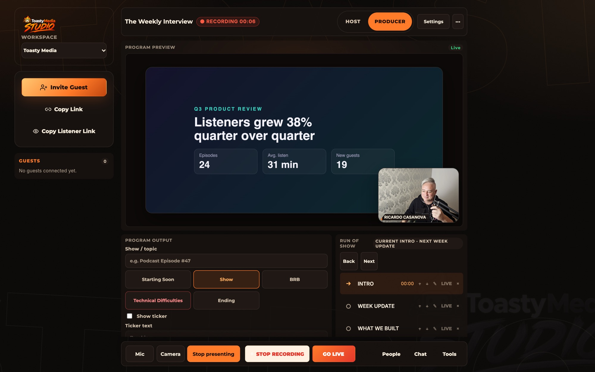
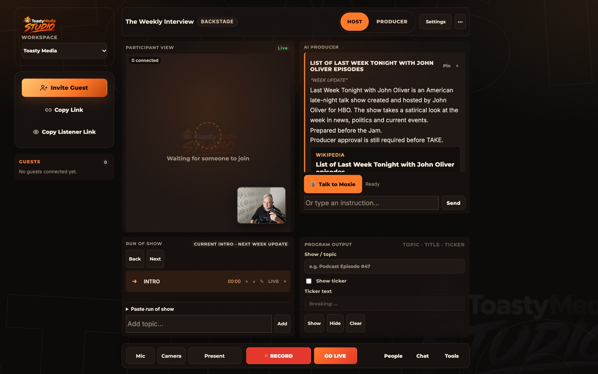
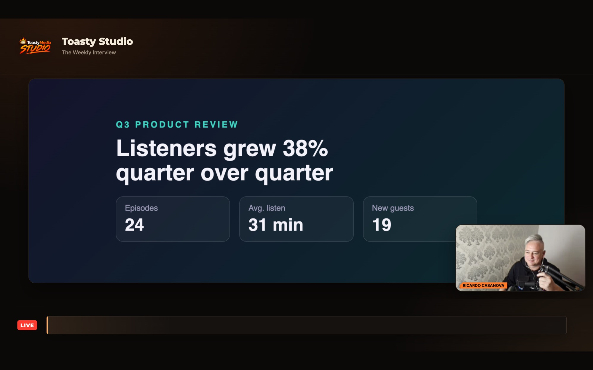
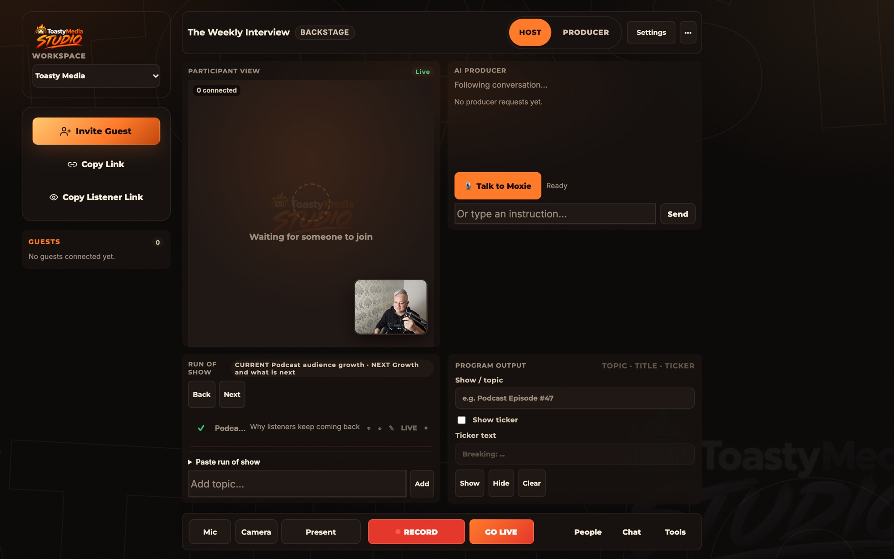
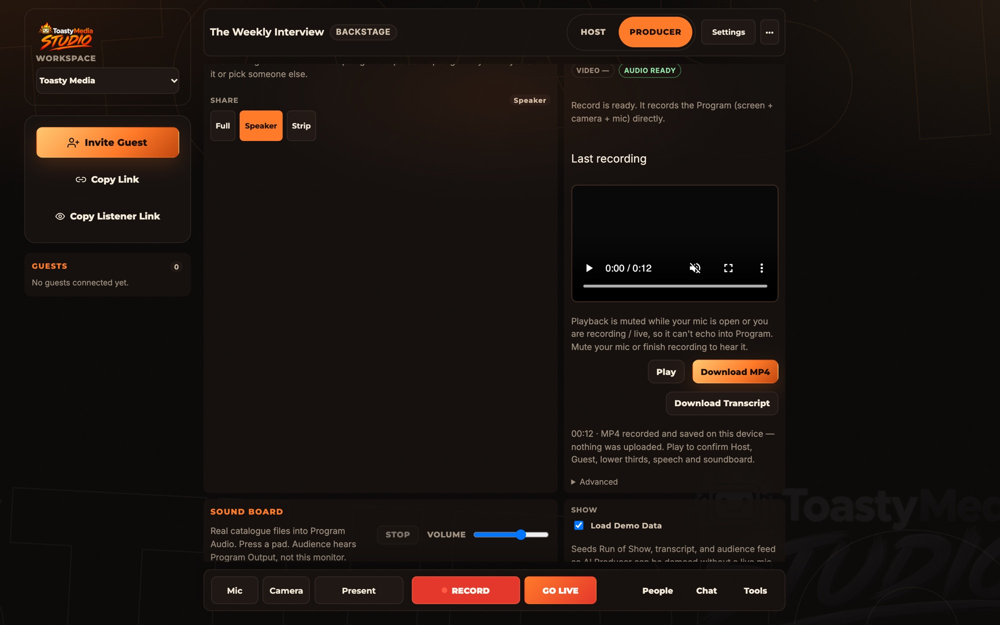
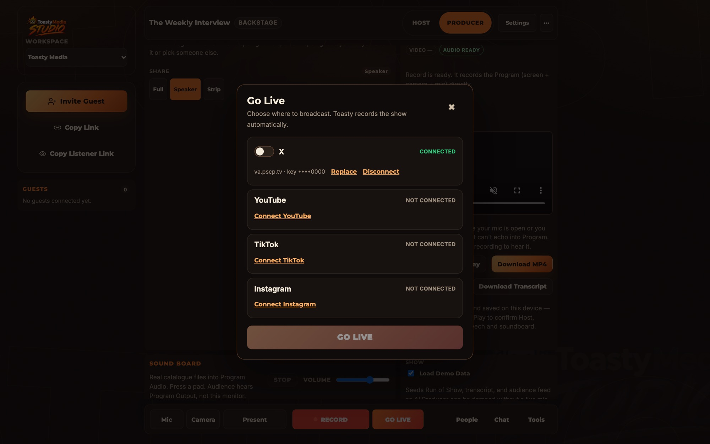

Podcasts & interviews
Invite a guest by link, direct the conversation, and leave with one finished recording instead of a folder of camera files.
Toasty Studio
A production studio in your browser for podcasts, interviews and live shows — with Moxie, an AI production partner at your side, your brand on every frame, and recordings that are made on your own machine.

Built for conversations
Studio is for people who make recorded and live conversations for a living — or want it to look like they do.
Invite a guest by link, direct the conversation, and leave with one finished recording instead of a folder of camera files.
Put people and content on screen, run a show with a run-of-show, and stream the same program to your channels.
Your logo, colours, name plates and lower thirds are part of the program — and part of the file.
Structured sessions with prepared questions, consent and a transcript — with Moxie keeping track of what has been covered.
Run the room
Bring people in with a link, then run the show from a single, stable set of controls. Nothing moves while you are recording, presenting or live.

Present
Press Present, choose a screen, window or browser tab, and it fills the stage with your camera in a picture-in-picture corner. The program — and anything recording or streaming it — updates by itself.

Meet Moxie
Moxie listens to the session, answers you privately, and does the legwork a producer would — while you stay in the conversation. It suggests; you decide what the audience sees.
Moxie works with your own AI provider key, so you control the model and the cost. Everything it proposes for the program waits for your approval.

Type or hold-to-talk. Ask what someone said, what you have not covered yet, or for a quick summary.
Ask for a topic, person, company or repository. Moxie searches public sources (Wikipedia and GitHub today) and prepares a card with the real link. It never invents a source.
You approve a prepared card and it goes to the program. Nothing goes live without you.
Prepared questions and topics that have not come up, quiet guests, and run-of-show timing — surfaced only to you.
Knows the current topic and what is next, and helps you keep to time.
Groups audience questions in Studio chat for you. Anything Moxie would post publicly needs your approval. Chat from YouTube, X and Telegram is next.
Today’s live transcript follows the browser’s speech recognition. Per-participant attribution for remote guests is in development.
Recording & transcription
Studio records the finished program in your browser at 6 Mbps video — straight to an MP4 where your browser supports it. Nothing has to be uploaded to get your file.

Live streaming
Connect X, YouTube, TikTok or Instagram once with each platform’s stream URL and key. After that, Go Live is a toggle and a button.
Each platform decides who can stream to it; some require a minimum following or approval.

Brand
Your logo, colours and lower thirds carry through the room, the live program and the finished recording. Organizations can lock a brand so every session stays on-brand.
What works today
Studio is in active development. This is what you can use now and what is on the way.
Guests by invite link · layouts · lower thirds · soundboard · ticker · run of show
Present a screen, window or tab · program output window
Local MP4/WebM recording · crash recovery · transcript export
Go Live to X, YouTube, TikTok and Instagram with automatic recording
Moxie: requests, research cards, run-of-show support
Guest video and audio inside the browser-made recording (today a guest recording uses the program output tab)
Audience chat from YouTube, X and Telegram into Moxie
Web-wide research for Moxie beyond Wikipedia and GitHub
Per-speaker transcript attribution for remote guests
Automatic episode summaries and highlight clips
Plans
These are the limits each plan enforces today. Paid plans are billed monthly; the price is shown at checkout, before you pay.
Includedwith every account
Monthlyprice shown at checkout
Monthlyprice shown at checkout
Talk to uscustom terms
Early access
Tell us what you want to produce. We will email you when access opens to more people — and nothing else.
Already have an account? Sign in to Studio.